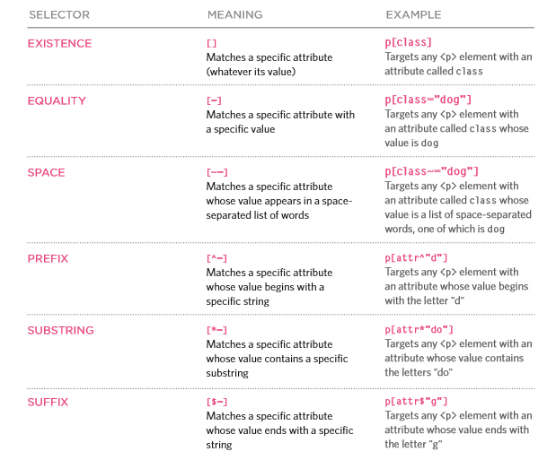

To use CSS, we use selectors to choose what part of our page we would like to apply our new rules to.
h1, h2, h3{
font-family: Arial;
color: yellow;}
Recall our earlier example. h1,h2, h3 are all selectors. In this case we are applying the same rules to all three
Now inside of our html we can create ids and classes and assign them certain elements.
<h1 id = "newLesson">New Tutorial</h1>
<h1 class = "newLesson2">Newer Tutorial</h1>
The point of this is so we can give specific parts of our webpage rules, without affecting the rules of all elements that may share the sam tag, we can apply css rules to them specifically.>
Here are some Selector examples:
| Selector | Example | Example description |
|---|---|---|
| .class | .intro | Selects all elements with class="intro" |
| #id | #firstname | Selects the element with id="firstname" |
| * | * | Selects all elements |
| element | p | Selects all <p> elements |
| element,element | div, p | Selects all <div> elements and all <p> elements |
| element element | div p | Selects all <p> elements inside <div> elements |
| element>element | div > p | Selects all <p> elements where the parent is a <div> element |
| element+element | div + p | Selects all <p> elements that are placed immediately after <div> elements |
| element1~element2 | p ~ ul | Selects every <ul> element that are preceded by a <p> element |
| [attribute] | [target] | Selects all elements with a target attribute |
| [attribute=value] | [target=_blank] | Selects all elements with target="_blank" |
| [attribute~=value] | [title~=flower] | Selects all elements with a title attribute containing the word "flower" |
| [attribute|=value] | [lang|=en] | Selects all elements with a lang attribute value starting with "en" |
| [attribute^=value] | a[href^="https"] | Selects every <a> element whose href attribute value begins with "https" |
| [attribute$=value] | a[href$=".pdf"] | Selects every <a> element whose href attribute value ends with ".pdf" |
| [attribute*=value] | a[href*="w3schools"] | Selects every <a> element whose href attribute value contains the substring "w3schools" |
| :active | a:active | Selects the active link |
| ::after | p::after | Insert something after the content of each <p> element |
| ::before | p::before | Insert something before the content of each <p> element |
| :checked | input:checked | Selects every checked <input> element |
| :disabled | input:disabled | Selects every disabled <input> element |
| :empty | p:empty | Selects every <p> element that has no children (including text nodes) |
| :enabled | input:enabled | Selects every enabled <input> element |
| :first-child | p:first-child | Selects every <p> element that is the first child of its parent |
| ::first-letter | p::first-letter | Selects the first letter of every <p> element |
| ::first-line | p::first-line | Selects the first line of every <p> element |
| :first-of-type | p:first-of-type | Selects every <p> element that is the first <p> element of its parent |
| :focus | input:focus | Selects the input element which has focus |
| :hover | a:hover | Selects links on mouse over |
| :in-range | input:in-range | Selects input elements with a value within a specified range |
| :invalid | input:invalid | Selects all input elements with an invalid value |
| :lang(language) | p:lang(it) | Selects every <p> element with a lang attribute equal to "it" (Italian) |
| :last-child | p:last-child | Selects every <p> element that is the last child of its parent |
| :last-of-type | p:last-of-type | Selects every <p> element that is the last <p> element of its parent |
| :link | a:link | Selects all unvisited links |
| :not(selector) | :not(p) | Selects every element that is not a <p> element |
| :nth-child(n) | p:nth-child(2) | Selects every <p> element that is the second child of its parent |
| :nth-last-child(n) | p:nth-last-child(2) | Selects every <p> element that is the second child of its parent, counting from the last child |
| :nth-last-of-type(n) | p:nth-last-of-type(2) | Selects every <p> element that is the second <p> element of its parent, counting from the last child |
| :nth-of-type(n) | p:nth-of-type(2) | Selects every <p> element that is the second <p> element of its parent |
| :only-of-type | p:only-of-type | Selects every <p> element that is the only <p> element of its parent |
| :only-child | p:only-child | Selects every <p> element that is the only child of its parent |
| :optional | input:optional | Selects input elements with no "required" attribute |
| :out-of-range | input:out-of-range | Selects input elements with a value outside a specified range |
| :read-only | input:read-only | Selects input elements with the "readonly" attribute specified |
| :read-write | input:read-write | Selects input elements with the "readonly" attribute NOT specified |
| :required | input:required | Selects input elements with the "required" attribute specified |
| :root | :root | Selects the document's root element |
| ::selection | ::selection | Selects the portion of an element that is selected by a user |
| :target | #news:target | Selects the current active #news element (clicked on a URL containing that anchor name) |
| :valid | input:valid | Selects all input elements with a valid value |
| :visited | a:visited | Selects all visited links |
We can further specify which element we want to select based on attributes. Here are the type of attribute selectors that we can use
